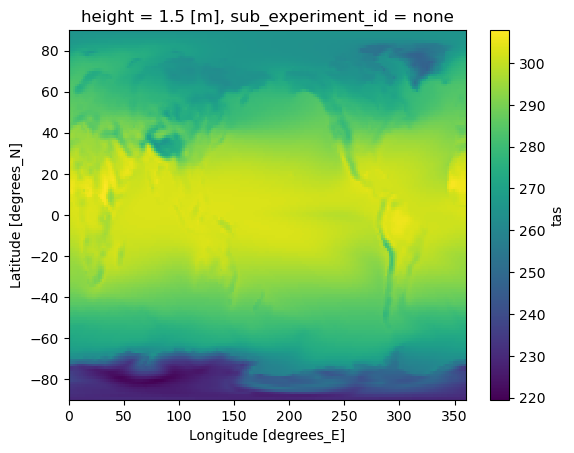
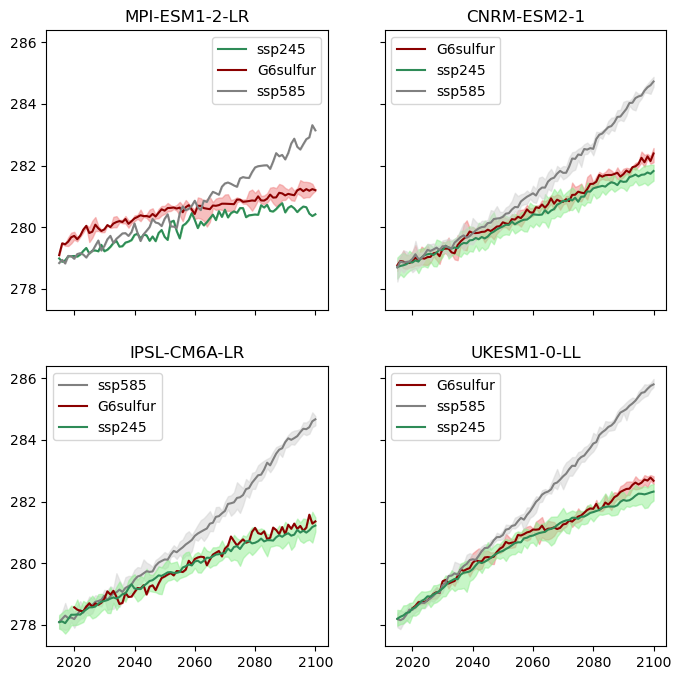

Working with the GeoMIP (and CMIP6) cloud-store#
This notebook demonstrates how to access and analyze GeoMIP G6sulfur data that’s hosted on the Google Cloud Storage in cloud-optimized (zarr) form.
Connect to the Google Cloud CMIP6 catalog using
intake-esmSearch for G6sulfur and comparison scenarios (SSP2-4.5, SSP5-8.5)
Load cloud-optimized Zarr data with preprocessing
Create multi-model ensemble visualizations
Recreate figures from published climate literature (Visioni et al., 2021)
The data was ingested into the store from ESGF by Julius Busecke, supported by Reflective, in August 2025.
See here for an overview of how to work with this kind of data: https://pangeo-data.github.io/pangeo-cmip6-cloud/accessing_data.html#loading-an-esm-collection
And here for some more specific guidance leap-stc/cmip6-leap-feedstock
Connect to the Google Cloud CMIP6 catalog#
We use intake-esm to connect to the Google Cloud-hosted CMIP6 catalog. This catalog contains metadata about available datasets and provides access to cloud-optimized Zarr data.
Catalog options:
catalog.json: Only stores that pass current quality control tests (recommended)
catalog_noqc.json: Stores that fail quality control tests (for testing)
catalog_retracted.json: Stores that have been retracted by ESGF
The catalog acts as a searchable index of all available climate model data.
import intake # see https://intake-esm.readthedocs.io/en/stable/index.html
# uncomment/comment lines to swap catalogs; use the first, unless deliberately testing
url = "https://storage.googleapis.com/cmip6/cmip6-pgf-ingestion-test/catalog/catalog.json" # Only stores that pass current tests
#url = "https://storage.googleapis.com/cmip6/cmip6-pgf-ingestion-test/catalog/catalog_noqc.json" # Only stores that fail current tests
# url = "https://storage.googleapis.com/cmip6/cmip6-pgf-ingestion-test/catalog/catalog_retracted.json" # Only stores that have been retracted by ESGF
col = intake.open_esm_datastore(url)
Search for GeoMIP and comparison data#
We search for surface air temperature (tas) data from:
Experiments: SSP2-4.5, SSP5-8.5, and G6sulfur
Frequency: Monthly atmospheric data (Amon)
Variable: Surface air temperature (tas)
Key filtering step: We use require_all_on=['source_id', 'institution_id'] to ensure we only get models that have data for ALL three scenarios. This allows for fair comparison across scenarios.
The resulting subset shows how many experiment members, variables, and tables each model provides.
# form query dictionary
query = dict(experiment_id=['ssp245', 'ssp585', 'G6sulfur'],
table_id='Amon',
variable_id=['tas'],
)
# subset catalog and get some metrics grouped by 'source_id'
col_subset = col.search(require_all_on=['source_id', 'institution_id'], **query)
col_subset.df.groupby('source_id')[['experiment_id', 'variable_id', 'table_id']].nunique() # this line just shows us the data we have
| experiment_id | variable_id | table_id | |
|---|---|---|---|
| source_id | |||
| CNRM-ESM2-1 | 3 | 1 | 1 |
| IPSL-CM6A-LR | 3 | 1 | 1 |
| MPI-ESM1-2-LR | 3 | 1 | 1 |
| UKESM1-0-LL | 3 | 1 | 1 |
Load data with preprocessing#
The to_dataset_dict() method with combined_preprocessing:
Downloads cloud-optimized Zarr data from Google Cloud Storage
Applies
xmippreprocessing to standardize variable names and coordinatesCreates a dictionary with keys in the format:
activity_id.institution_id.source_id.experiment_id.table_id.grid_label
from xmip.preprocessing import combined_preprocessing
ddict = col_subset.to_dataset_dict(preprocess=combined_preprocessing)
--> The keys in the returned dictionary of datasets are constructed as follows:
'activity_id.institution_id.source_id.experiment_id.table_id.grid_label'
Example Usage#
Recreation of Figure 1 from Visioni et al., 2021; https://acp.copernicus.org/articles/21/10039/2021/acp-21-10039-2021.html We first create a simple map to verify the data loaded correctly and get a first look at the temperature patterns. The map shows the time-averaged surface air temperature for the G6sulfur scenario from UKESM1-0-LL model.
# the xarray datasets themselves are stored in the dictionary ddict, which has keys in the format shown below:
ds = ddict['GeoMIP.MOHC.UKESM1-0-LL.G6sulfur.Amon.gn']
ds.mean(dim=['time', 'variant_label']).tas.plot()
<matplotlib.collections.QuadMesh at 0x7fe8883afbc0>

Multi-model ensemble visualization#
We create a figure that compares temperature trajectories across:
Multiple models: Different climate models
Three scenarios: SSP2-4.5, SSP5-8.5, and G6sulfur
Ensemble members: Multiple realizations from each model
Visualization approach:
Each subplot represents one climate model
Solid lines show ensemble means
Shaded areas show ensemble spread (min to max)
Color coding distinguishes between scenarios
Time period: 2015-2100 for future projections
This allows us to see how different models respond to geoengineering and compare their projections.
## we can iterate over the returned datasets to plot across models, scenarios and ensemble members:
import matplotlib.pyplot as plt
import xarray as xr
import numpy as np
fig, axs = plt.subplots(2, 2, figsize=(8, 8), sharey=True, sharex=True)
models = list(set([key.split('.')[2] for key in ddict.keys()])) # get a list of the unique models in the ddict
ax_dict = dict(zip(models, range(len(models)))) # we are going to loop over the datasets, not the models, so define a dict to decide which ax to plot onto
color_dict = {'G6sulfur':'darkred', 'ssp585':'gray', 'ssp245':'seagreen'}
light_color_dict = {'G6sulfur':'lightcoral', 'ssp585':'lightgray', 'ssp245':'lightgreen'}
for key, ds in ddict.items():
print(f"Processing: {key}")
model, experiment = key.split('.')[2], key.split('.')[3]
global_mean_tas = ds.sel(time=slice('2015', '2100'))['tas'].mean(dim=['y', 'x','sub_experiment_id'], skipna=True)
annual_global_mean_tas = global_mean_tas.groupby(global_mean_tas.time.dt.year).mean() # strictly, I should weight by month length here, but I don't for this quick visualisation
ens_mean = annual_global_mean_tas.mean('variant_label')
ens_max = annual_global_mean_tas.max('variant_label')
ens_min = annual_global_mean_tas.min('variant_label')
ax = axs.flatten()[ax_dict[model]]
ax.set_title(model)
ax.plot(ens_mean.year.values, ens_mean.values, label=experiment, c=color_dict[experiment])
ax.fill_between(ens_max.year.values, ens_min.values, ens_max.values, color=light_color_dict[experiment], alpha=0.5)
for ax in axs.flatten():
ax.legend()
plt.show()
Processing: GeoMIP.CNRM-CERFACS.CNRM-ESM2-1.G6sulfur.Amon.gr
Processing: ScenarioMIP.IPSL.IPSL-CM6A-LR.ssp585.Amon.gr
Processing: ScenarioMIP.MPI-M.MPI-ESM1-2-LR.ssp245.Amon.gn
Processing: ScenarioMIP.CNRM-CERFACS.CNRM-ESM2-1.ssp245.Amon.gr
Processing: GeoMIP.IPSL.IPSL-CM6A-LR.G6sulfur.Amon.gr
Processing: ScenarioMIP.CNRM-CERFACS.CNRM-ESM2-1.ssp585.Amon.gr
Processing: GeoMIP.MPI-M.MPI-ESM1-2-LR.G6sulfur.Amon.gn
Processing: GeoMIP.MOHC.UKESM1-0-LL.G6sulfur.Amon.gn
Processing: ScenarioMIP.IPSL.IPSL-CM6A-LR.ssp245.Amon.gr
Processing: ScenarioMIP.MPI-M.MPI-ESM1-2-LR.ssp585.Amon.gn
Processing: ScenarioMIP.MOHC.UKESM1-0-LL.ssp585.Amon.gn
Processing: ScenarioMIP.MOHC.UKESM1-0-LL.ssp245.Amon.gn
